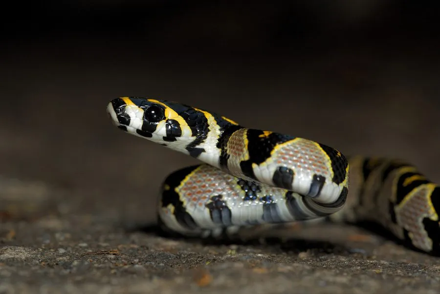

爬行动物 · 动物界
玉斑锦蛇 Elaphe mandarina

中国南方山区的华丽无毒蛇，背部有黄色圆斑、边缘镶黑，因体色美丽常被捕捉，野外数量已不常见。
- 分类
- 门脊索动物门纲爬行纲目有鳞目科游蛇科属锦蛇属
- 栖息环境
- 中国南方山区的森林、灌丛、溪边与岩石地带
- 地理分布
- 中国南方多省区及越南、缅甸等东南亚国家
- 保护级别
- IUCN 暂无评估；中国未列入国家重点保护名录
物种志
玉斑锦蛇体长 0.8–1.2 米，身体较细，头部略扁，吻端钝；体色以灰褐或深灰色为底，背部有一列醒目的黄色或橙色椭圆形斑块，每个斑块边缘镶黑色，体侧还有较小的黄斑，“玉斑”之名由此而来，腹部灰白并带黑斑。它的花纹鲜艳，是锦蛇中最具观赏性的种类之一。
它分布于中国南方以及越南、缅甸等地的山区，栖息于森林、灌丛、溪边和岩石地带，多在夜间活动，捕食鼠类、蜥蜴和小型哺乳动物。它是卵生蛇类，雌蛇每次产卵 5–10 枚，孵化期约 60–70 天。玉斑锦蛇无毒，因体色美丽常被捕捉作为宠物，加上栖息地破坏，野外数量已不常见；它未被列入国家重点保护名录，但捕捉和贸易会进一步威胁其种群，建议不要购买野生个体。
形态与习性
- 食性鼠类、蜥蜴和小型哺乳动物
- 体长0.8–1.2 m
- 寿命约 10–15 年
- 繁殖卵生，5–10 枚，孵化 60–70 天
- 活动节律夜行性
- 毒性无毒，对人无害
趣味知识
- 玉斑锦蛇背部有一列黄色圆斑，边缘镶黑，像镶嵌的玉石。
- 它体色美丽，常被捕捉作为宠物，野外数量已不常见。
- 玉斑锦蛇无毒，主要捕食鼠类和小型蜥蜴。